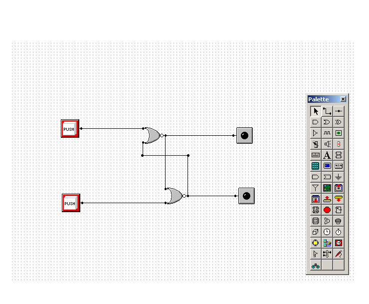

Multimedia Logic is one of the simplest, most powerful, most universal languages known. The intent is to use what you build, to allow experimentation, to learn and to have fun. These details are ignored so that you can deal directly with the logical aspect of the problem at hand. In the "real world", when you’re ready to build your circuit you can worry about these details. Here is a simple example of real world versus the logic simulated world.
Multimedia Logic is a really easy program for a simulation of a
circuit. It tells the voltage, resistance, the current and other important
stuff that is used to make a real life circuit.
Logic Friday is a freeware tool for students, hobbyists, and
engineers who work with legacy digital logic circuits based on standard IC packages.
With Logic Friday you can:
My Experience with Logic Friday was really good, it is a really easy program to use. The user should just know the basics, the best part about this program is that it converts Boolean Equation or Truth Table into Logic Diagram and asks for the gates to be used. This program also simplifies the Boolean Equation or the Logic Diagrams. I learnt how to use this program in 2 minutes, and I used this program for my Traffic Light assignment.